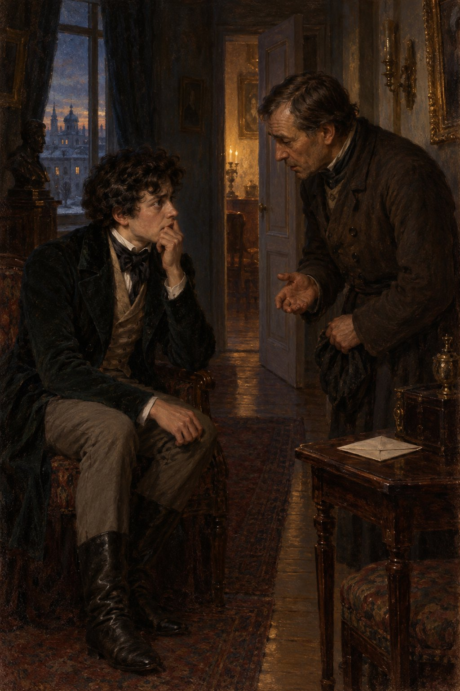

Ivan Turgenev · First Love
제19장
밤 정원에서의 일이
뜻밖에 끝난 뒤,
그 다음 한 주 동안
내게 무슨 일이 있었는지
자세히 말하라고 한다면
나는 몹시 난처할 것이다.
기묘한 열병 같은 시간이었다.
서로 반대되는 감정과 생각,
의심과 희망,
기쁨과 괴로움이
혼란 속에서 소용돌이쳤다.
열여섯 살 소년이
제 마음속을 들여다볼 수 있다면,
나는 그렇게 하기가 무서웠다.
무엇이든 분명히
인정하기가 두려웠다.
그저 하루가 빨리
저물기만 바랐다.
밤에는 잠을 잘 잤다.
어린아이의 가벼운 마음이
그럴 때는 도움이 됐다.
지나이다가 나를 사랑하는지
알고 싶지 않았다.
사랑하지 않는다는 사실도
인정하고 싶지 않았다.
아버지는 피했다.
하지만 지나이다는
피할 수 없었다.
그녀 앞에 서면
불에 타는 듯했다.
어떤 불길에서
몸이 타고 녹는지
알아서 무엇 하겠는가.
타고 녹는 일이
달콤하기만 했다.
나는 온갖 느낌에
몸을 맡겼다.
스스로를 속이고,
기억에서는 고개를 돌리고,
앞일에 대한 예감에는
눈을 감았다.
그 고통도 아마
오래가지는 않았을 것이다.
벼락 같은 사건이
모든 것을 한꺼번에 끝내고
나를 다른 길로 밀어 넣었다.
어느 날
꽤 긴 산책을 마치고
점심때 집에 돌아왔다.
나는 혼자 먹어야 했다.
아버지는 외출했고
어머니는 몸이 좋지 않아
식사를 거절하고
침실에 틀어박혔다.
하인들의 얼굴만 봐도
심상치 않은 일이 있었음을
알 수 있었다.
차마 묻지는 못했다.
하지만 젊은 식기 담당 하인
필리프는 내 친구였다.
그는 시를 열렬히 좋아하고
기타도 잘 쳤다.
나는 그를 찾아갔다.
필리프 말로는
아버지와 어머니 사이에
무서운 말다툼이 있었다.
하녀들의 방에는
말소리가 하나도 빠짐없이 들렸다.
프랑스어로 한 말도 많았지만
하녀 마샤는
파리에서 온 재봉사들과
오 년을 지내
모두 알아들었다.
어머니는 아버지가
이웃집 아가씨와
부적절한 관계를 맺었다고
몰아세웠다.
아버지는 처음엔 해명했다.
그러다 화를 내며
어머니 나이를 두고
잔인한 말을 했다고 한다.
어머니는 울었다.
어머니는 또
늙은 공작부인에게 준 듯한
빚 문서를 꺼내며
그 여자와 딸을
심하게 헐뜯었다.
아버지는 어머니를
위협했다.
“이 모든 일의 시작은
이름 없는 편지였답니다.”
필리프가 말을 이었다.
“누가 썼는지는 모릅니다.
그 편지가 아니었다면
어떻게 이런 일이
드러났겠습니까?”

“정말 무슨 일이 있었어?”
나는 겨우 물었다.
손발이 차가워졌고
가슴 깊은 곳에서
무엇인가 떨렸다.
필리프가 의미심장하게
눈을 깜박였다.
“있었지요.
이런 일은 숨길 수 없습니다.
나리께서 아무리 조심하셔도
마차를 빌리는 일처럼
남의 손이 필요한 때가
있기 마련이니까요.”
나는 필리프를 내보내고
침대에 쓰러졌다.
소리 내어 울지도,
절망에 몸을 맡기지도 않았다.
언제 어떻게 시작됐는지
묻지 않았다.
왜 진작 알아채지 못했는지
놀라지도 않았다.
아버지를 원망하지도 않았다.
알게 된 사실은
내가 감당할 수 없었다.
갑작스러운 폭로가
나를 짓눌렀다.
모든 것이 끝났다.
내 안의 꽃이
한꺼번에 뽑혀
주위에 흩어졌다.
짓밟힌 채로.